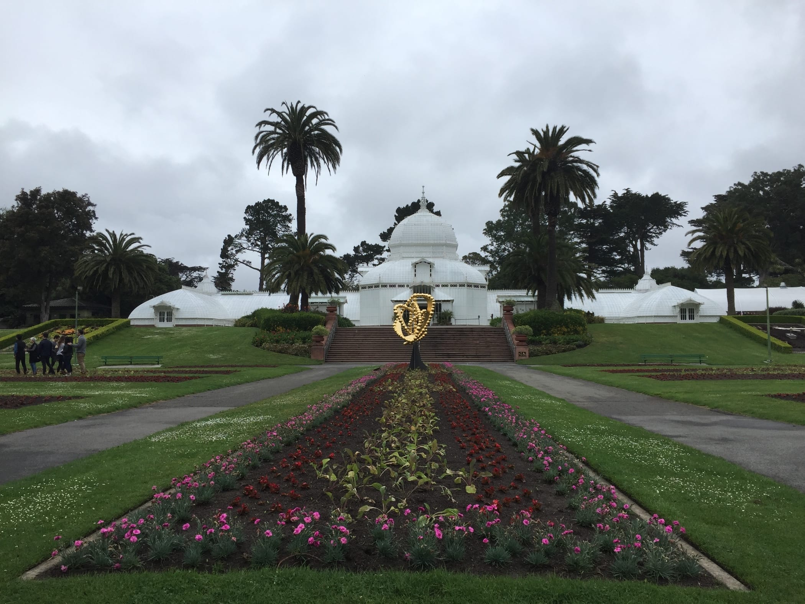
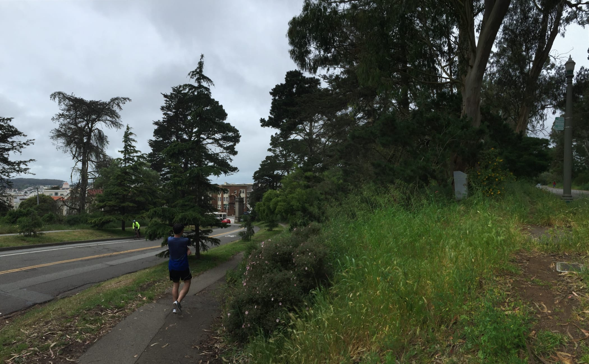
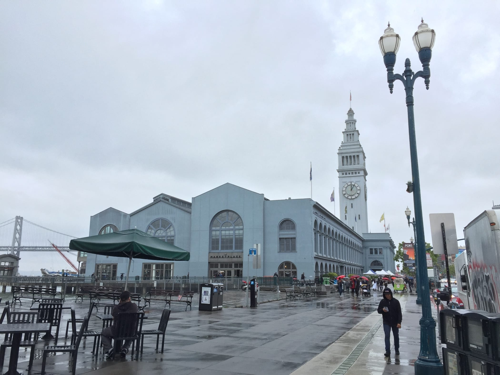
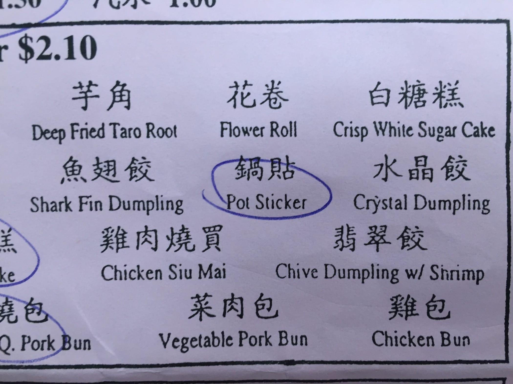
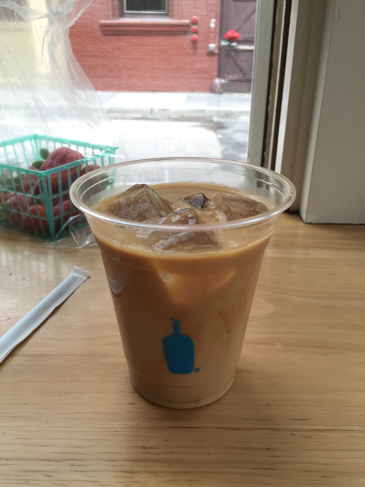
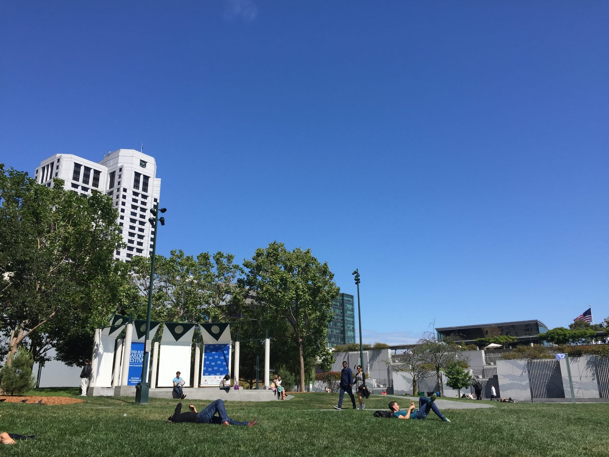
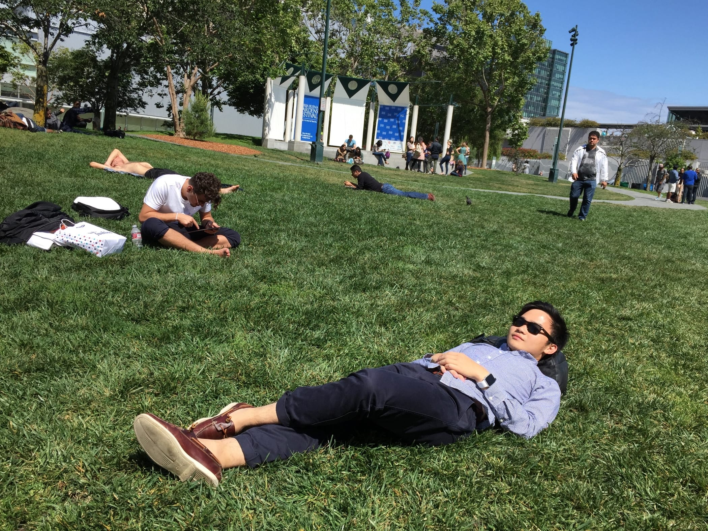

Sunday, 8 May 2016 at 12:30 PM
Weekly Log #6
UserTesting
Slack integration
Took on a new project where I had to build a custom integration. It works as a web server, which posts to Slack whenever someone makes a POST request to it. Initially I had to figure out how to build a Node.JS server with the Express web framework, in addition to baking in ES6 support from the get-go for cleaner code. Thankfully, there was a boilerplate project on GitHub that I could use.
After a discussion with Mark, the senior VP of Product & Engineering, I looked into an older chat bot project that the company used to use. It was written using an old version of GitHub’s Hubot project, which seemed like a good fit for what we were trying to achieve here.
Slack bot API
The Slack bot API is pretty extensive, but its message formatting options are pretty limited. For starters, advanced features like adding colours can only be added through message attachments. These colours only show up as a single thick vertical line, such as below:
A Slack integration showing a shoe item from Amazon. Notice the vertical grey line on the left.
There is basic markdown formatting, such as bold and italic. Unfortunately, there is no way to colour text, unless they are hyperlinks.
Saturday
Jurvis signed up for a 42km marathon in SF, which he has to train for. So on Saturday he took a long run around the city, before ending in Embarcadero. The route is like the MRT’s Circle Line - almost a circle, except with a little more to go. As he went on his run I walked around and met up with him at the finishing line 😂

Conservatory of Flowers, Golden Gate Park

Golden Gate Park

Ferry Building (Port of San Francisco)
Sunday
We looked for dim sum to eat, and we found Good Luck Dim Sum.
(insert photo of shop here)

Their English is really cute 😄
We also spent a bit of time at Blue Bottle Coffee.

Better than Starbucks
After that, we went to Yerba Buena Gardens to chill again.

The sky was blue, and it was a clear day with sunlight and chilly winds.

We did not touch the grass when we went on Saturday as we saw two dogs urinating on the grass within five minutes of arriving there. However, this week…